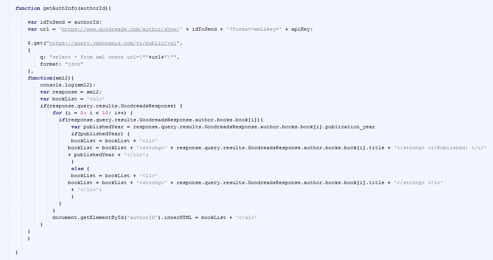

Let's talk about the JSON object that you receive back from your GET request. Not all of the calls in the Goodreads API can return a JSON object, so sometimes this will need to be done in XML, but for the sake of this guide, we are looking at JSON.
Earlier I explained how we can't use regular GET requests through Goodreads and need to use a proxy. Because of this, accessing the information we need requires a longer string of calls. Using Yahoo YQL, information is wrapped inside of query.results.GoodreadsResponse, so any time we need to pull information out of the object we receive, we will start with that.
Let's look at another example of a way to use the Goodreads API.
Here, we are going to look at 2 new methods. The first, is searching for an author to get the author ID. We will then use the author ID to pull up information about the author's books.
So what's going on here is very similar to the last code example, we are passing in the author's name, replacing the spaces with the appropriate string, and sending a GET request to Goodreads. From there, once we get a response, we're sending the author's ID into a second function to get the author's info. Before we look at that function, here is an example of the JSON that we get back from this GET request.
As you can see, we don't get too much information from this call. We mostly only need the ID, since we can't expect the user to know the ID on their own. We also receive a link to the author's page, and the author's name.
Let's move on to the call that really gives us a lot of info.

This function is a little bit more interesting. We do the same type of GET call as before (as we will with most methods for this API), this time passing in the author ID we received from the last call, but what we do with the information is a bit different.
The purpose of this function is to display the first 10 books from the author and, if available, the year it was published. To do this, I'm looping through each of the book objects that are returned from the GET call. Let's look at what the object structure looks like:
Now, there is a lot more going on with this object than there was in the prior object. For our purposes, we're looking into the book nodes (the one that is open in this example is for "The Shining"). But, you can pull up just about any piece of information you'd need about an author or one of their books from this call. Books, years published, pages in the book, etc.
So, back to the code -- we are looping through the first 10 book objects and building HTML to display the list. The first check looks to see if there is a publication date, and if there is, we print both the name and the publication date. Otherwise, we just print the name. Once the string is built, we use a GetElementById and input the HTML into our page.
Here's a working example for you to try out the functionality:
Ten Books by your Author